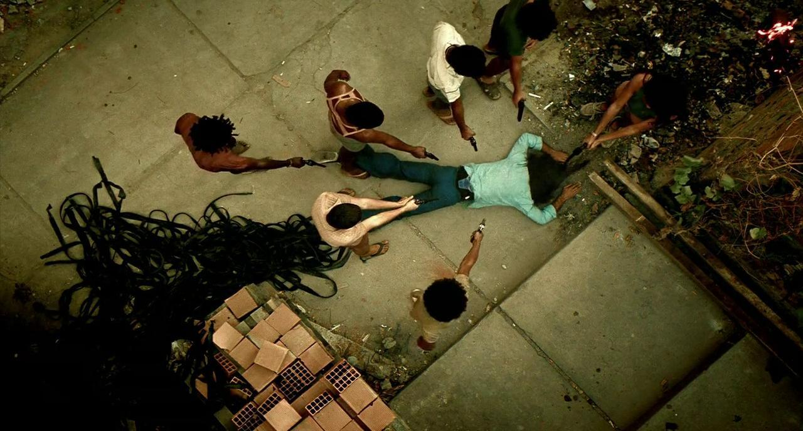
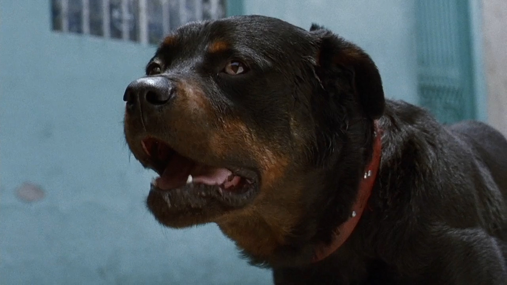

El cine latinoamericano, pese a sus esfuerzos, no siempre obtiene el reconocimiento bien merecido dentro de la industria. Año tras año son decenas de cientos de títulos que se estrenan en las salas de cine y que lamentablemente no siempre obtienen retribución de taquilla debido a la escasez de buenos actores, a la falta de presupuesto o simplemente a la burocracia. No obstante, hay ciertos títulos que se escapan de esta regla y que son presentados en festivales para su deshuese ante la crítica. Muchos salen victoriosos y otro tanto se consigue alzar con alguno que otro premio. Este artículo rinde homenaje a esas películas que si no has visto, deberías hacerlo apenas termines de leer esta nota.

Antes de comenzar, quiero aclarar que el orden de aparición de cada título NO obedece ninguna regla en especial, por lo cual no le doy mayor o menor importancia a un título en relación a los demás. También aclaro que no he visto las decenas de cientos de películas latinoamericanas que existen, por lo cual pido disculpas si tú, apreciado lector, encuentras que hay un par de títulos que me quedan por fuera. Sin más dilación, aquí las 8 películas latinoamericanas que
1. Relatos Salvajes
Podría apostar lo que fuera a que tú, estimado lector, has estado al borde de perder la cordura por algún evento puntual en al menos 3 ocasiones, como mínimo. Este es precisamente el tema que aborda "Relatos salvajes", una película argentina del director Damián Szifron que relata a través de seis historias independientes como sus protagonistas van explorando la venganza desde distintas facetas. ¿Los detonantes? Una traición amorosa, el retorno del pasado, una tragedia o incluso la violencia contenida en un detalle cotidiano. Esta película del 2014 fue nominada nada más y nada menos que al premio de la Academia en la categoría "Mejor película extranjera". También recibió 10 galardones en los "Premios Sur", 9 nominaciones a los premios "Goya", obteniendo de ellos el de "Mejor película hispanoamericana". También recibió el premio "Mejor película iberoamericana" de la Academia de cine mexicana. De igual forma, Relatos salvajes fue presentada en el festival de Cannes, en el Festival de cine de Toronto, en el Festival de cine de Londres, Festival de cine de San Sebastián, entre otros.
2. Azul y no tan rosa
Esta película venezolana dirigida por Miguel Ferrari fue una verdadera sorpresa durante su estreno. Azul y no tan rosa narra la historia de Diego, un joven fotógrafo que de la noche a la mañana deberá hacerse cargo de Armando, su hijo a quien no ve desde hace muchos años. Todo esto transcurre en una etapa en la que Fabrizio, novio de Diego, sufre un brutal ataque y queda en coma, dejando a su novio y nuestro protagonista afectado y vulnerable ante los cambios que experimenta su vida. Como temas paralelos, veremos un poco de violencia doméstica, homofobia, identidad de género, autoestima, entre otros; que son presentados a nosotros de manera excepcional desde la dirección de fotografía, de arte y al diseño sonoro que dejan claro que nada fue dejado a la suerte. Azul y no tan rosa obtuvo el premio de "Mejor película Iberoamericana" en los Goya en el año 2012.
3. Una mujer fantástica
Marina (Daniela Vega), una mujer trans que vive en Santiago de Chile, tendrá que afrontar los mayores problemas luego de la muerte de su amante. Este drama dirigido por Sebastián Lelio obtuvo varios premios, entre los más destacados el Oscar en la categoría "Mejor película extranjera", el Goya como "Mejor película Iberoamericana", el Globo de oro como "Mejor película de lengua no inglesa", entre otros. Sin duda alguna "Una mujer fantástica" es una película para explorar desde una perspectiva más humana, toda la transfobia que aún, en pleno siglo XXI, tienen que sufrir las personas trans que desean, añoran y necesitan un trato más digno dentro de la sociedad.
4. Ciudad de Dios
Ciudad de Dios es una película de acción brasileña, basada en el libro homónimo de Paulo Lins (1997). Con un guion de Bráulio Mantovani y bajo la dirección de Fernando Meirelles y Kátia Lund, el filme se estrenó en Brasil en agosto de 2002. La película, que tuvo un gran impacto internacional, se convirtió en un hito del cine brasileño cuando fue nominada al Oscar en las categorías de mejor director, mejor guion adaptado, mejor fotografía y mejor montaje. El éxito no solo reside en los elementos visuales, técnicos y estéticos, sino también en el mensaje social que transmite. Ciudad de Dios muestra un Brasil que no conoce todo el mundo y que pocos quieren ver y, por eso, es un filme necesario.
5. NO
No es la tercera película de Pablo Larraín sobre los años de la dictadura de Augusto Pinochet. Con las tres ha triunfado en el Festival de La Habana: Primer Premio Coral por Tony Manero (2008), Segundo Premio Coral por Post mórtem (2010) y Primer Premio Coral por No (2012), que también estuvo nominada al Oscar a la mejor película en lengua extranjera este año, compitió en la Quincena de los Realizadores del Festival de Cannes en 2012 y fue este año el filme de apertura del Buenos Aires Festival Internacional de Cine Independiente (Bafici). La película No se enmarca en la dictadura chilena de Augusto Pinochet que, en 1988, cedió ante las presiones internacionales que cuestionaban la legitimidad del gobierno militar y convocó a un plebiscito. En ese plebiscito, el pueblo chileno tenía dos opciones: votar sí para extender el mandato del candidato único del gobierno, o votar no para convocar elecciones democráticas. Al contrario de lo que puede parecer, más que enfocarse meramente en los intríngulis políticos de aquel episodio, la película tiene como punto de vista el desarrollo de la campaña propagandística por el NO. En otras palabras, se enfocó en los modos que encontró la sociedad chilena para vencer al miedo sembrado en 15 años de régimen autoritario.
6. Roma
Roma narra la historia de Cleo, una mujer originaria de Oaxaca que trabaja como empleada doméstica para una familia de la colonia Roma. Al tener sólo los fines de semana libres, aprovecha para hacer su vida y se enamora de un hombre que la abandona al saber que la embarazó. Sin embargo, con el apoyo de Sofía, la mujer para quien trabaja, quien a su vez fue abandonada por un esposo adúltero, logra salir adelante. Se refleja así la violencia e inequidad que viven las mujeres y cómo ambas se agudizan en las mujeres indígenas. Alfonso Cuarón se logró alzar con el Oscar a mejor director en el año 2019 y Roma obtuvo el premio BAFTA al igual que el Globo de oro a la "Mejor Película", entre otros premios que obtuvo el filme.
7. Amores perros
Un terrible accidente automovilístico se convierte en el punto de encuentro de tres "amores perros". Octavio, un joven adolescente enamorado de su cuñada, ha transformado a su perro "Cofi" en una mortífera arma con la que desea escapar de su miseria amorosa. Valeria, una hermosa modelo, ve truncada su carrera y su nueva vida al lado de Daniel, mientras su pequeño perro "Richi" queda atrapado, como ella, en los estrechos límites de su departamento. Por su parte el taciturno Chivo, un ex-guerrillero que no puede acercarse a la hija que algún día abandonó, sublima su necesidad de amor recogiendo perros en la calle. Ninguno de ellos volverá a ser el mismo después del accidente. Todos, incluyendo a los perros, encontrarán un destino muy distinto al que algún día imaginaron. "Amores perros" obtuvo varios premios, entre ellos el otorgado por BAFTA como la "Mejor película de habla no inglesa".
8. Tengo miedo torero
Tengo miedo torero es un drama romántico político, donde triunfa más en la exposición sentimental que en el contexto histórico. Aun así, logra mostrar alguna pincelada de la dificultad del colectivo LGBTQ+ de existir en tiempos convulsos, donde no había cabida en ningún espacio público. Gracias a ello, hay un planteamiento suficiente, que podría haberse explotado más y dar una recreación más completa de la época que se relata. Por otra parte, Alfredo Castro triunfa en el film, con una interpretación con matices, humanidad y mucho respeto. Se come la cámara. Después, a nivel técnico y estético establece su sello de identidad, apostando por una conexión directa con el espectador al dar una imaginario específico al lugar habitual del film. Asimismo, la música es otro de los grandes aciertos de este film. La guerrilla exterior e interior, que se sublima en su carácter personal, pero se pierde en el plano social e histórico.